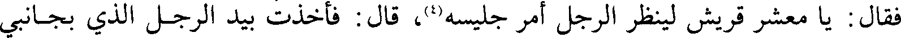
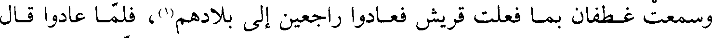
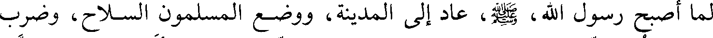
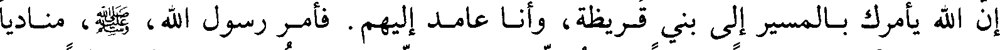
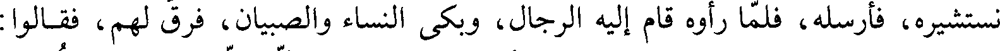

File: 000630.gt.txt (if the image is defective, simply delete all Arabic text and the line will be excluded)
فلما انتهى إلى النبي صعلم اختلاف أمرهم دعا حذيفة بن اليمان ليلا فقال انطلق
File: 000631.gt.txt (if the image is defective, simply delete all Arabic text and the line will be excluded)

إليهم وانظر حالهم ولا تحدثن شيئا حتى تأتينا قال حذيفة فذهبت فدخلت فيهم
File: 000632.gt.txt (if the image is defective, simply delete all Arabic text and the line will be excluded)
والريح وجنود الله تفعل فيهم ما تفعل لا يقر لهم قدر ولا بناء ولا نار فقام أبو سفيان
File: 000633.gt.txt (if the image is defective, simply delete all Arabic text and the line will be excluded)

فقال يا معشر قريش ليأخذ كل رجل منكم بيد جليسه(4) قال فأخذت بيد الرجل الذي بجانبي
File: 000634.gt.txt (if the image is defective, simply delete all Arabic text and the line will be excluded)

فقلت من أنت قال أنا فلان
File: 000635.gt.txt (if the image is defective, simply delete all Arabic text and the line will be excluded)
ثم قال أبو سفيان والله لقد هلك الخف والحافر وأخلفتنا قريظة ولقينا من هذه
File: 000636.gt.txt (if the image is defective, simply delete all Arabic text and the line will be excluded)

الريح ما ترون فارتحلوا فإني مرتحل ثم قام إلى جمله وهو معقول فجلس عليه ثم
File: 000637.gt.txt (if the image is defective, simply delete all Arabic text and the line will be excluded)

ضربه فوثب على ثلاثة قوائم ولولا عهد رسول الله صعلم إلي أني لا أحدث شيئا
File: 000638.gt.txt (if the image is defective, simply delete all Arabic text and the line will be excluded)

لقتلته
File: 000639.gt.txt (if the image is defective, simply delete all Arabic text and the line will be excluded)
قال حذيفة فرجعت إلى النبي صعلم وهو قائم يصلي في مرط لبعض نسائه
File: 000640.gt.txt (if the image is defective, simply delete all Arabic text and the line will be excluded)

فأدخلني بين رجليه وطرح علي طرف المرط فلما سلم أخبرته الخبر
File: 000641.gt.txt (if the image is defective, simply delete all Arabic text and the line will be excluded)

وسمعت غطفان بما فعلت قريش فعادوا راجعين إلى بلادهم(1) فلما عادوا قال
File: 000642.gt.txt (if the image is defective, simply delete all Arabic text and the line will be excluded)
صعلم رسول الله صعلم ( الآن نغزوهم ولا يغزونا ) فكان كذلك حتى فتح الله مكة
File: 000643.gt.txt (if the image is defective, simply delete all Arabic text and the line will be excluded)

ذكر غزوة بني قريظة(2
File: 000644.gt.txt (if the image is defective, simply delete all Arabic text and the line will be excluded)

لما أصبح رسول الله صعلم عاد إلى المدينة ووضع المسلمون السلاح وضرب
File: 000645.gt.txt (if the image is defective, simply delete all Arabic text and the line will be excluded)

على سعد بن معاذ قبة في المسجد ليعوده من قريب فلما كان الظهر أتى جبريل النبي
File: 000646.gt.txt (if the image is defective, simply delete all Arabic text and the line will be excluded)
صعلم فقال أقد وضعت السلاح قال نعم قال جبريل ما وضعت الملائكة السلاح
File: 000647.gt.txt (if the image is defective, simply delete all Arabic text and the line will be excluded)

إن الله يأمرك ن بالمسير إلى بني صعلم قريظة وأنا عامد إليهم فأمر رسول الله صعلم مناديا
File: 000648.gt.txt (if the image is defective, simply delete all Arabic text and the line will be excluded)

فنادى من كان سامعا مطيعا فلا يصلين العصر إلا في بني قريظة وقدم عليا إليهم
File: 000649.gt.txt (if the image is defective, simply delete all Arabic text and the line will be excluded)

برايته وتلاحق الناس ونزل رسول الله صعلم وأتاه رجال بعد العشاء الأخيرة فصلوا
File: 000650.gt.txt (if the image is defective, simply delete all Arabic text and the line will be excluded)
العصر بها وما عابهم رسول الله صعلم (3
File: 000651.gt.txt (if the image is defective, simply delete all Arabic text and the line will be excluded)

وحاصر بني قريظة شهرا أو خمسا وعشرين ليلة فلما اشتد عليهم الحصار أرسلوا
File: 000652.gt.txt (if the image is defective, simply delete all Arabic text and the line will be excluded)

إلى رسول الله صعلم أن تبعث إلينا أبا لبابة بن عبد المنذر وهو أنصاري من الأوس
File: 000653.gt.txt (if the image is defective, simply delete all Arabic text and the line will be excluded)

نستشيره فأرسله فلما رأوه قام إليه الرجال وبكى النساء والصبيان فرق لهم فقالوا
File: 000654.gt.txt (if the image is defective, simply delete all Arabic text and the line will be excluded)
ننزل على حكم رسول الله فقال نعم وأشار بيده إلى حلقه إنه الذبح قال أبو لبابة
File: 000655.gt.txt (if the image is defective, simply delete all Arabic text and the line will be excluded)

فما زالت قدماي حتى عرفت أني خنت الله ورسوله وقلت والله لا أقمت بمكان عصيت
File: 000656.gt.txt (if the image is defective, simply delete all Arabic text and the line will be excluded)

الله فيه وانطلق على وجهه حتى ارتبط في المسجد وقال لا أبرح حتى يتوب الله علي
File: 000657.gt.txt (if the image is defective, simply delete all Arabic text and the line will be excluded)

فتاب الله عليه وأطلقه رسول الله صعلم(1
File: 000658.gt.txt (if the image is defective, simply delete all Arabic text and the line will be excluded)

ثم نزلوا على حكم رسول الله صعلم فقال الأوس يا رسول الله افعل في موالينا
File: 000659.gt.txt (if the image is defective, simply delete all Arabic text and the line will be excluded)

مثل ما فعلت في موالي الخزرج يعني بني قينقاع وقد تقدم ذكرهم فقال ألا ترضون